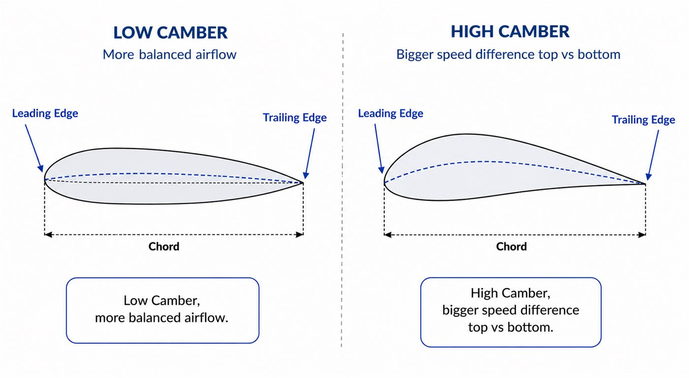
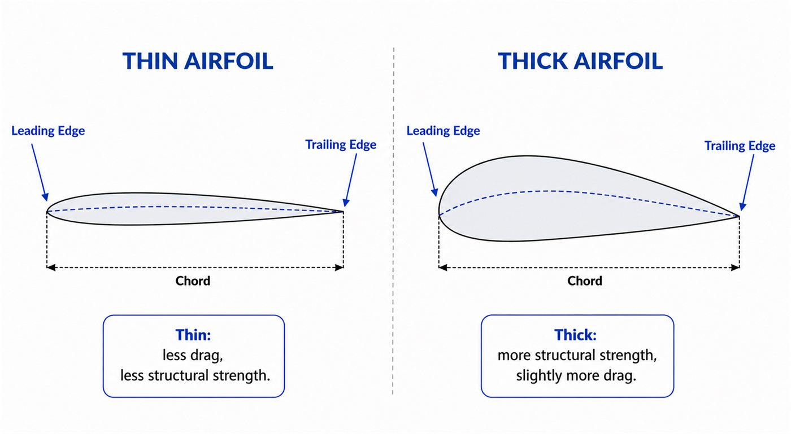
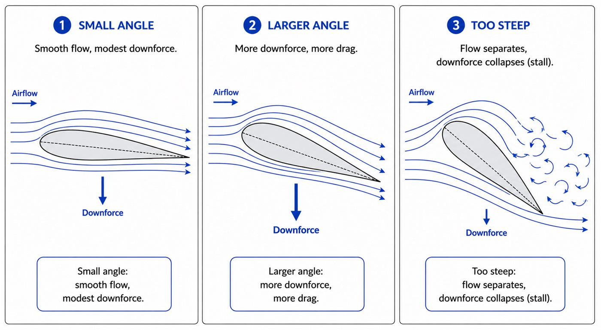
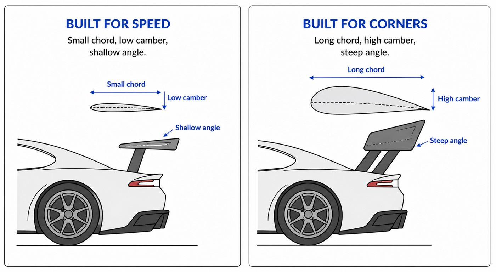

01 - ZOOM IN
Why we need to look closer
Module 3 explained why a wing can create downforce. Now we ask what makes one wing shape different from another.
The answer is the wing's cross-section: the airfoil. Small changes in this shape can create big changes in downforce, drag, strength and stall behaviour.
02 - ANATOMY
What is an airfoil?
If you sliced a wing from front to back and looked at the cut face, that profile is the airfoil. It has a front called the leading edge, a rear called the trailing edge, a chord line, and a camber line.
03 - CHORD
Chord is the length of the profile
Chord is the straight-line distance from the leading edge to the trailing edge. A longer chord gives air more surface to act on, so it can usually create more downforce, but it also tends to bring more drag and weight.
Long chord = more wing to work with. Short chord = less drag potential, but also less load potential.
04 - CAMBER
Camber is how curved the airfoil is
Camber describes how much the centreline bends. More camber usually creates a bigger speed difference between the two sides of the wing, which can mean more downforce, but also more drag.

05 - THICKNESS
Thickness is the strength-versus-drag compromise
A thin airfoil can be aerodynamically clean, but real wings must survive serious loads. A thicker airfoil is usually stronger, while also adding some drag and surface interaction.

06 - ANGLE OF ATTACK
The tilt that changes everything
Angle of attack is the wing's tilt relative to incoming air. Increase it a little and downforce usually rises. Push it too far and the flow can separate, causing stall: the wing stops working cleanly.

07 - READ A WING
Airfoils are a design language
Once you know chord, camber, thickness and angle of attack, you can start reading wings like clues. A small shallow wing hints at speed. A big steep wing hints at cornering grip.

Small chord, low camber and shallow angle reduce drag.
Long chord, high camber and steep angle create more load.
The goal is the right compromise, not the biggest number.
GO DEEPER
Books worth opening
Race Car Aerodynamics - Joseph KatzAirfoil selection and race-car wing design parameters.
Understanding Aerodynamics - Doug McLeanAirfoil theory, real lift physics and stall behaviour.
NACA airfoil resourcesA natural next step for seeing standardised airfoil shapes.
Finished this lesson? Mark it as complete to track your progress.